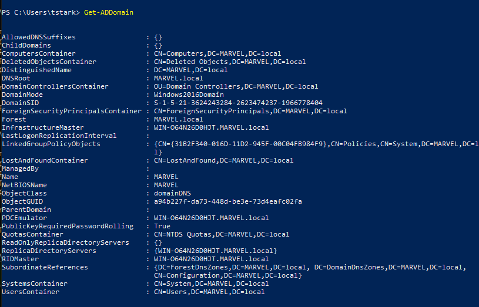
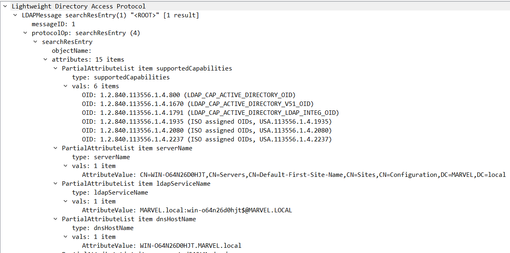

Basic Active Directory Enumeration on the Wire
Table of Contents
1. Overview
I've been considering looking at the traffic of some of the active directory enumeration methods and tools generate and break it down from a basic perspective.
This lab setup was using the same setup that TCM used in the AD portion of PEH.
When looking at the initial connections make, domain information is passed before authentication is made, allowing for tools and attackers to discern the domain name for further attacks.
2. Powershell ActiveDirectory Module
Had to install the Windows RSAT on the domain user I wanted to test these on. https://www.varonis.com/blog/powershell-active-directory-module
import-module ActiveDIrectory Get-ADDomain

Wireshark From the ActiveDirectory module
15 10.258916 192.168.17.145 192.168.17.144 TCP 150 57600 → 9389 [PSH, ACK] Seq=1 Ack=1 Win=8209 Len=96 16 10.259080 192.168.17.145 192.168.17.144 TCP 77 57600 → 9389 [PSH, ACK] Seq=97 Ack=1 Win=8209 Len=23 19 10.260902 192.168.17.145 192.168.17.144 TCP 59 57600 → 9389 [PSH, ACK] Seq=120 Ack=2 Win=8209 Len=5
First thing that sticks out is [PSH, ACK]
According to packetlife.net, "The TCP#PSH Flag in the TCP header informs the receiving host that the data should be pushed up to the receiving application immediately" Meaning that it is telling the buffer of the networking device to not wait until the tcp message is full before sending it on. This was weird to me because the command has been executed and there doesn't need to be real communications.
Until I realized that the PSH is just as much for the client as it is the server, and powershell is a good example of the server needing that to go ahead and PSH some of the received data (back from the request server). This isn't what is happening in the first few packets, just a thought on why this would be useful.
The data of the first packet has
· ···Wnet.tcp://win-o64n26d0hjt.marvel.local:9389/ActiveDirectoryWebServices/Windows/Resource··
where win-o64n26d0hjt is just the computer name
marvel.local is the domain
port? 9389
then what looks like the rest of a URI?
The second packet, continues with the data as application/negotiate which looks like http headers?
The rest of the packets seem to devolve into serious
3. C-sharp class for ActiveDirectory
Don't need anything other than powershell access
$ADClass = [System.DirectoryServices.ActiveDirectory.Domain] $ADClass::GetCurrentDomain()
Wireshark From the C-sharp class
5 22.797621 192.168.17.145 192.168.17.144 TCP 66 57855 → 389 [SYN] Seq=0 Win=64240 Len=0 MSS=1460 WS=256 SACK_PERM=1 6 22.797782 192.168.17.144 192.168.17.145 TCP 66 389 → 57855 [SYN, ACK] Seq=0 Ack=1 Win=65535 Len=0 MSS=1460 WS=256 SACK_PERM=1 7 22.797869 192.168.17.145 192.168.17.144 TCP 54 57855 → 389 [ACK] Seq=1 Ack=1 Win=2102272 Len=0 8 22.798878 192.168.17.145 192.168.17.144 LDAP 404 searchRequest(1) "<ROOT>" baseObject 9 22.799119 192.168.17.144 192.168.17.145 TCP 1514 389 → 57855 [ACK] Seq=1 Ack=351 Win=2102272 Len=1460 [TCP segment of a reassembled PDU] 10 22.799128 192.168.17.144 192.168.17.145 LDAP 1345 searchResEntry(1) "<ROOT>" | searchResDone(1) success [1 result]
Looks like more traffic is generated but starts with the traditional SYN SYN,ACK ACK handshake that then dives into LDAP which lives encapsulated within TCP (so layer 5?) where it request
LDAPMessage searchRequest(1) "<ROOT>" baseObject
From the ldapwiki.com https://ldapwiki.com/wiki/BaseObject "BaseObject is a specification for LDAP Search Scopes that specifies that the Search Request should only be performed against the entry specified as the search Base DN." But this returns the domain rather quickly in the 10 packet after the TCP handshake THEN LDAP request

but it goes on to create 312 more packets. With an LDAP authentication right after the answer is given.